02-terraform-state-and-resource-references-screenshots.pdf in this folder.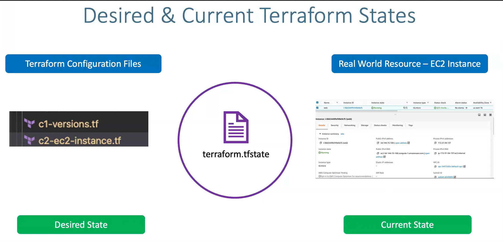
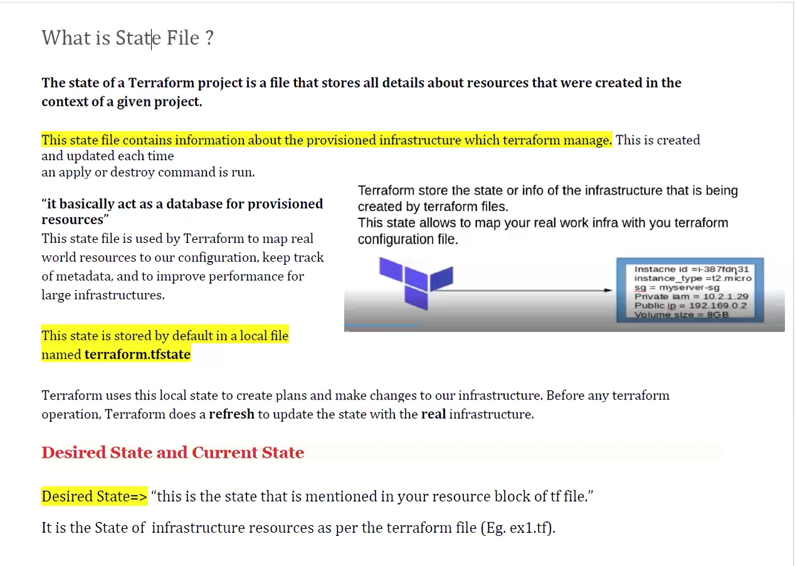
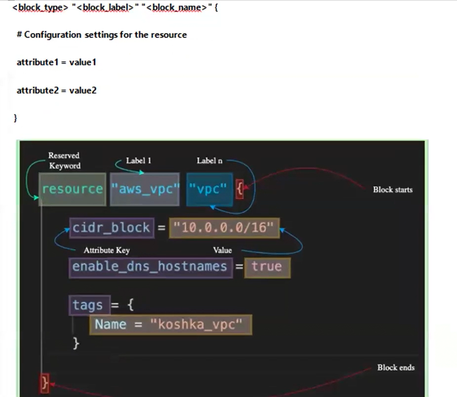
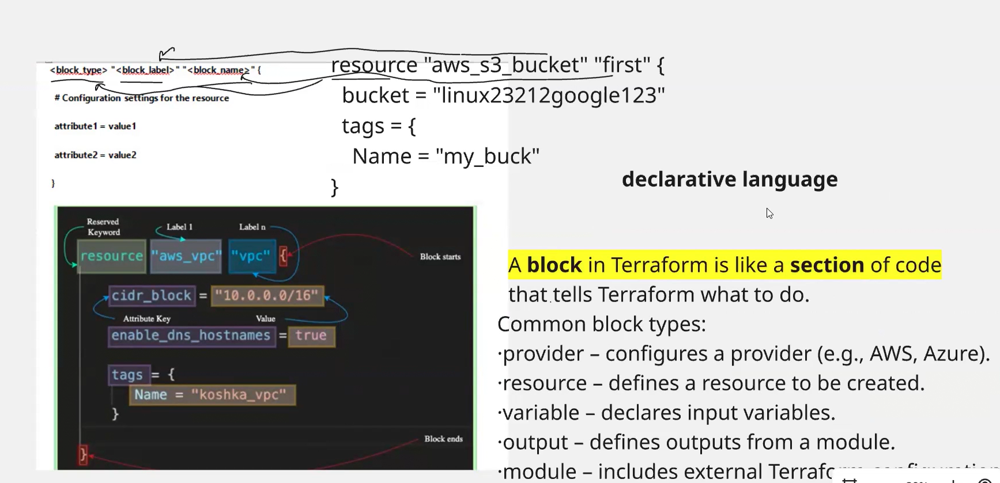
nl main.tf: EC2 instance + S3 bucket resource blocks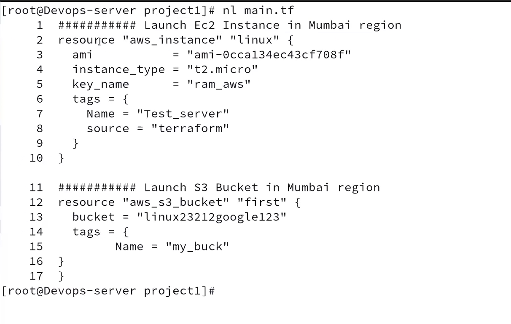
terraform state list: aws_instance.linux, aws_s3_bucket.first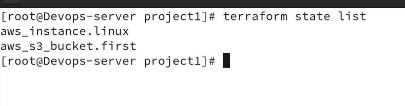
ll: main.tf + auto-created terraform.tfstate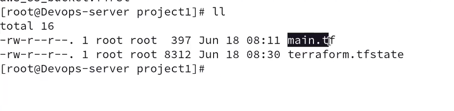
terraform plan: "No changes. Your infrastructure matches the configuration."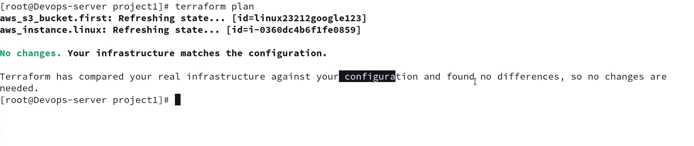
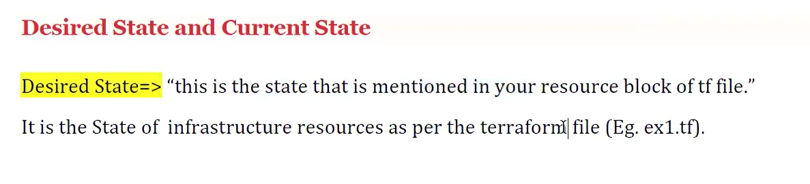
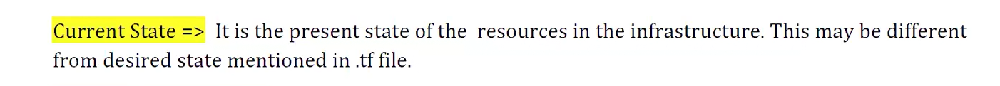
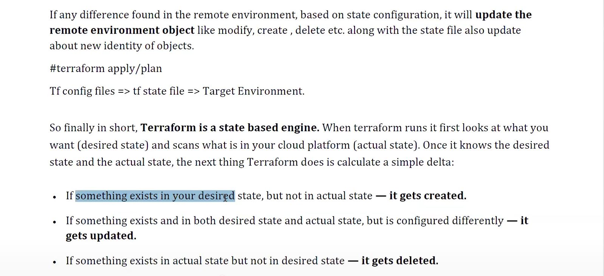
terraform state show aws_s3_bucket.first (command entered)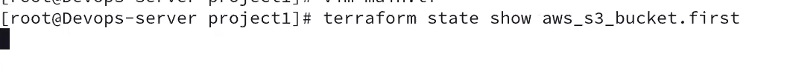
terraform plan diff after adding a Team=Linux tag: "1 to change" in-place update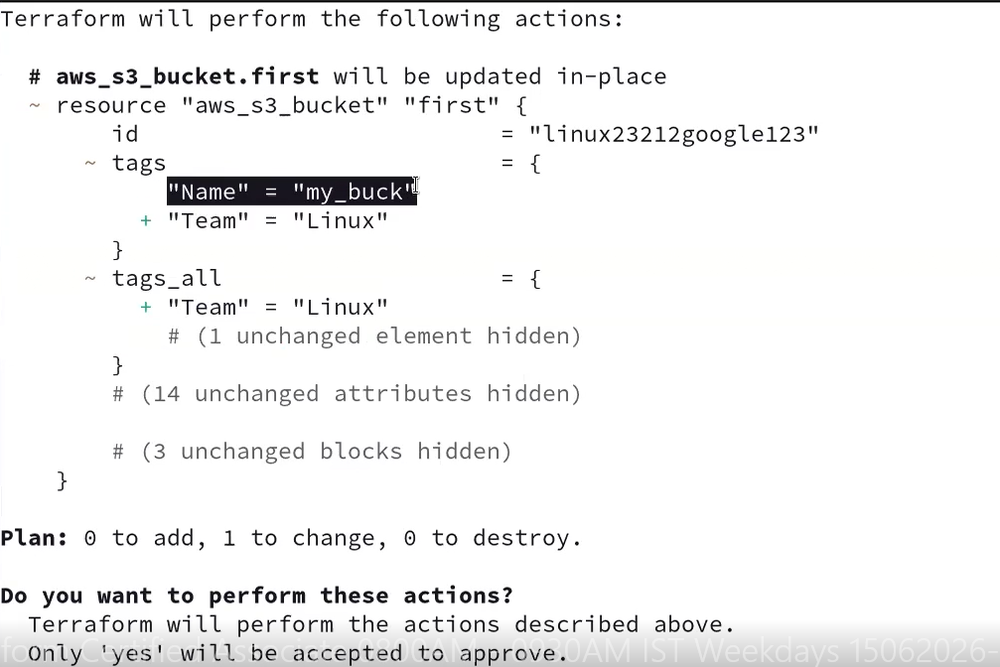
ll: terraform.tfstate.backup auto-created after the apply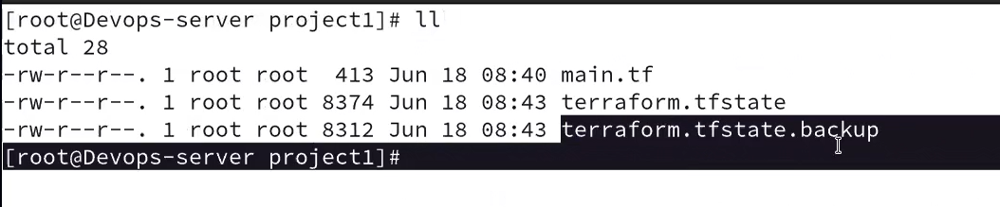
terraform graph -type=plan | dot -Tpng > graph.png with an example rendered dependency graph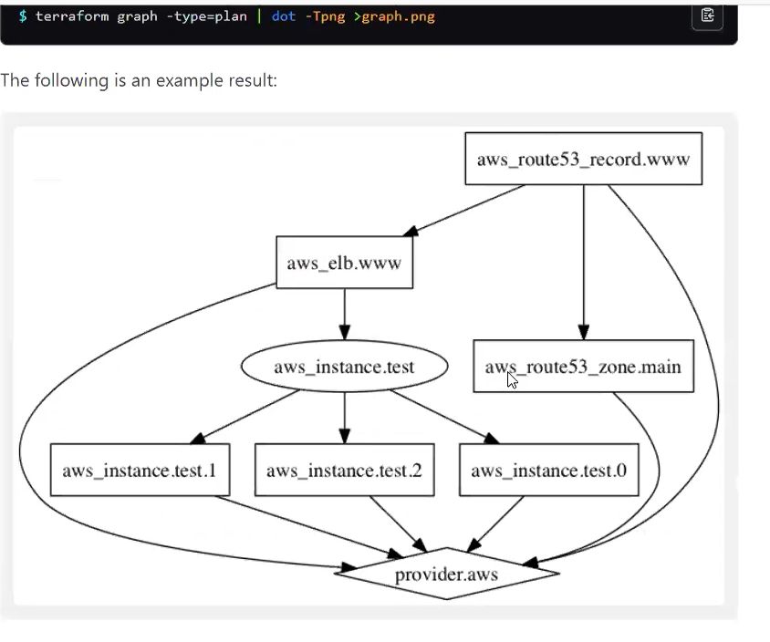
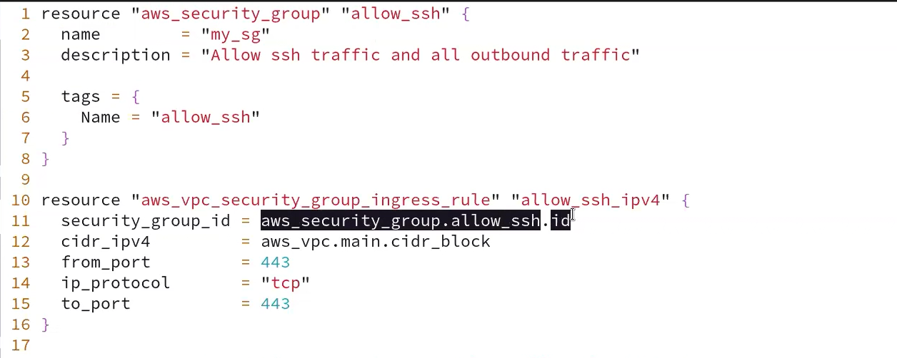
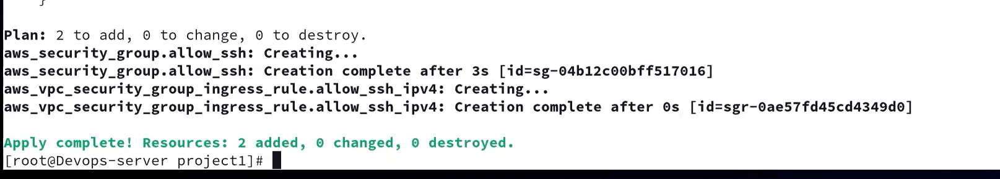
vpc_security_group_ids = [aws_security_group.allow_ssh.id]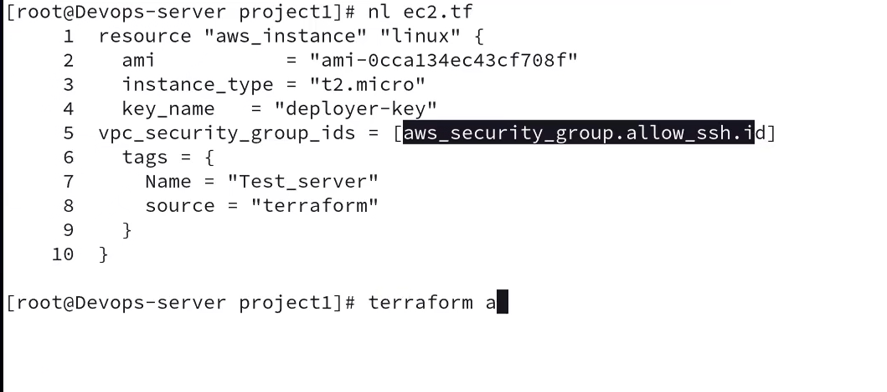
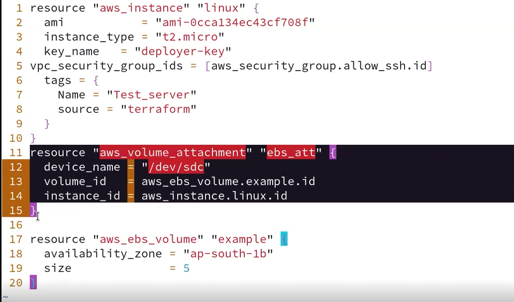
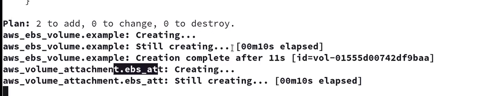
yum install graphviz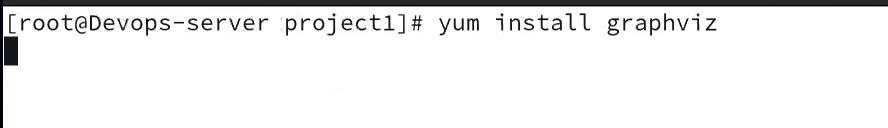
man dot; terraform graph -type=plan | dot -Tpng > graph.png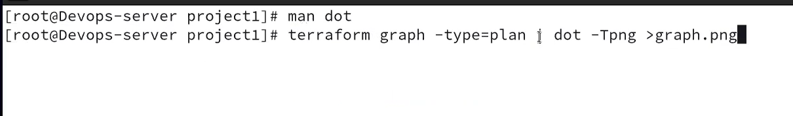
ls: graph.png generated alongside ec2.tf, key.tf, sg.tf, state files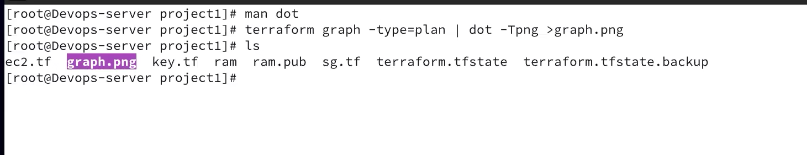
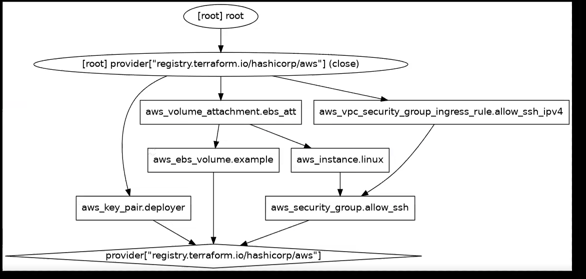
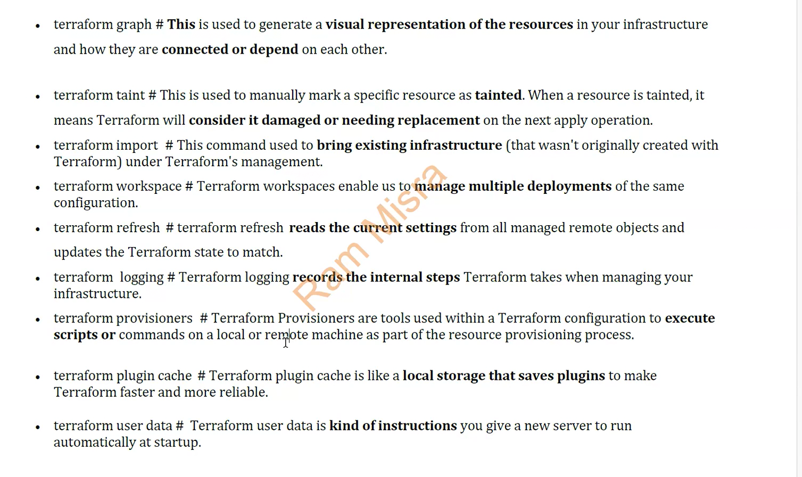